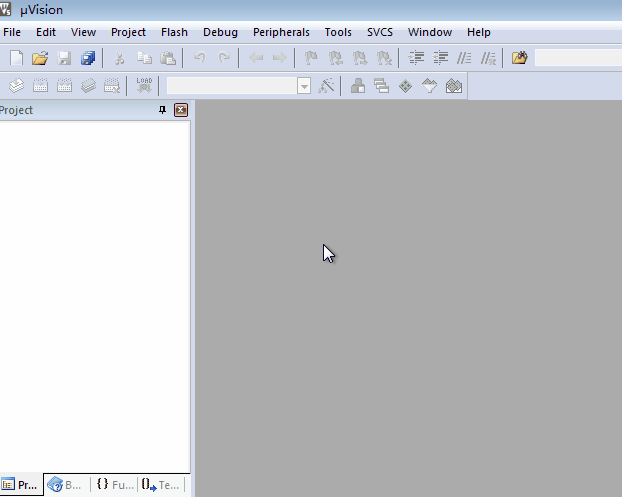
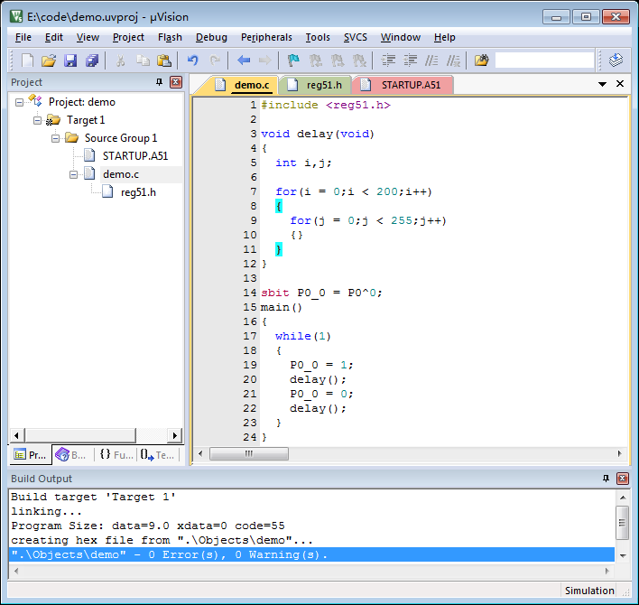
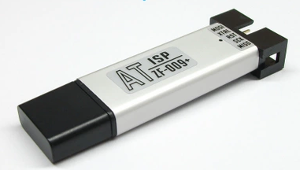
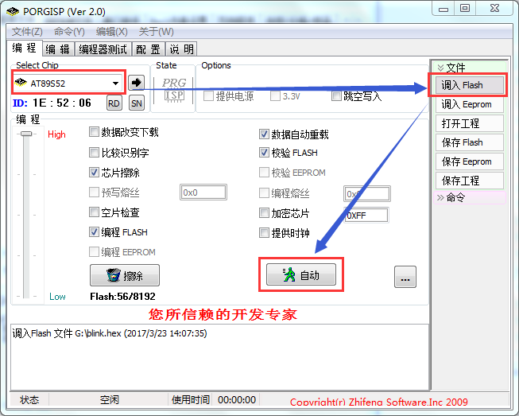
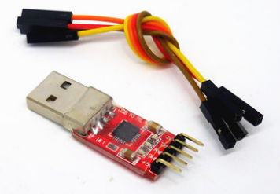
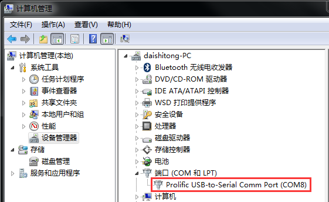
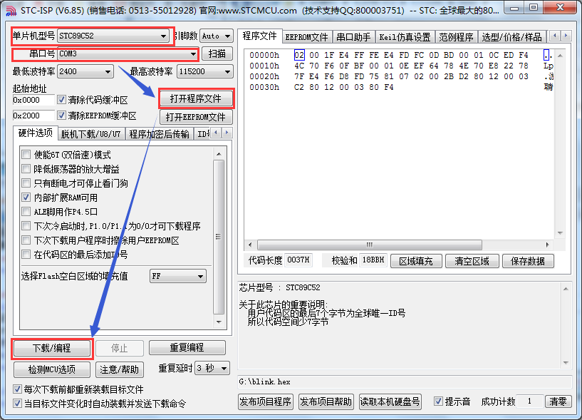

0.说明
通过编写一个简单的程序，熟悉Keil开发环境的使用和Hex二进制文件下载。
1.准备
- 按《Keil安装说明》中的步骤，安装好Keil开发环境。
- 准备一件完整的51单片机硬件板。
- 下载51单片机数据手册，推荐Atmel 51单片机，在AT89S51产品页下载《AT89S51数据手册(DataSheet)》，以备查阅。
2.新建工程
- 打开Keil开发环境，点击"Project--New uVision Project"。
- 选择主控芯片为"AT89S51"。
- 新建文档，保存为后缀为".c"的文件。
- 将文件添加到工程中。
- 在"工程--Options for Target'Target1'--Output--Create Hex File"，勾选确定。
- 点击"Build"按钮，出现"creating hex file from 'xxx'..."字样。

3.编码
- 添加主控芯片对应的头文件，头文件中，主要包含寄存器的定义。
- 在工程中的.c文件，添加main函数。
- 定义管脚。
- 在main函数中，增加无限循环语句while(1)。
- 添加其他相关代码。

4.下载
- 记录工程所生成的Hex二进制文件路径。也可以使用：P0.0口LED闪烁二进制文件。
- AT系列单片机使用Progisp软件下载。
- 使用PC机USB口，连接AT系列下载器。
- 另一端连接单片机板IDC10下载口。

- 打开Progisp软件，选择主控芯片型号。
- 点击"调入Flash"按钮，选择工程所生成的Hex二进制文件。
- 确保选中"编程Flash"后，点击"自动"按钮。

- STC系列单片机使用STC-ISP软件下载。
- 使用PC机USB口，连接USB转TTL下载器。
- 另一端连接单片机板串口。
注意：单片机板RXD需接下载器TXD，单片机板TXD需接下载器RXD。

- 安装相应驱动，确保映射成一个串口。

- 打开STC-ISP软件，选择单片机型号。
- 选择下载器的串口号。
- 点击"打开应用程序"按钮，选择工程所生成的Hex二进制文件。
- 点击"下载/编程"按钮。
- 需断电重启STC单片机，才能开始下载进程。
